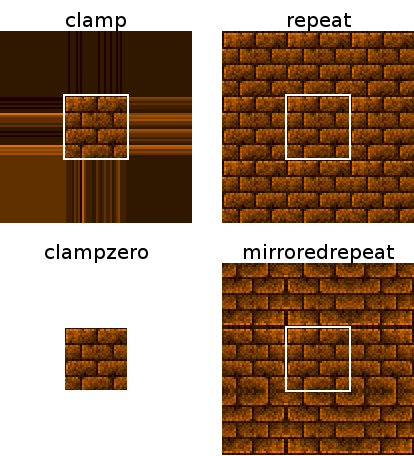

How the image wraps inside a Quad with a larger quad size than image size. This also affects how Meshes with texture coordinates which are outside the range of [0, 1] are drawn, and the color returned by the Texel Shader function when using it to sample from texture coordinates outside of the range of [0, 1].

repeat mode when the texture doesn't seamlessly tile.